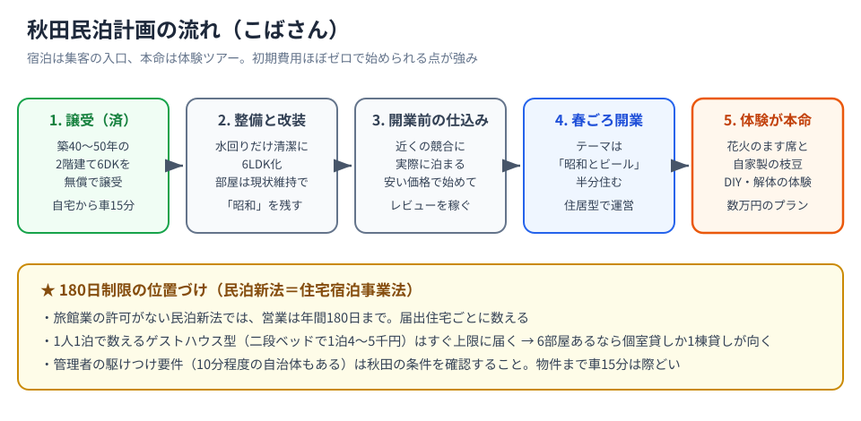
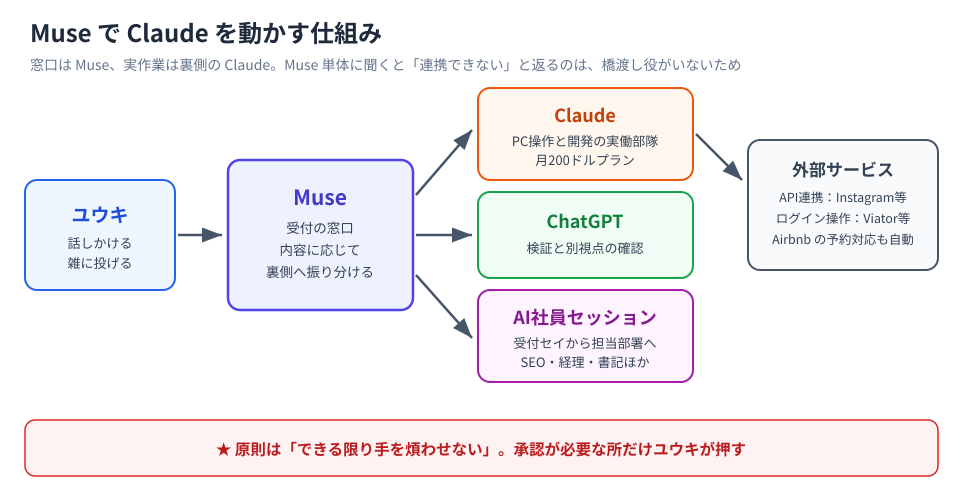
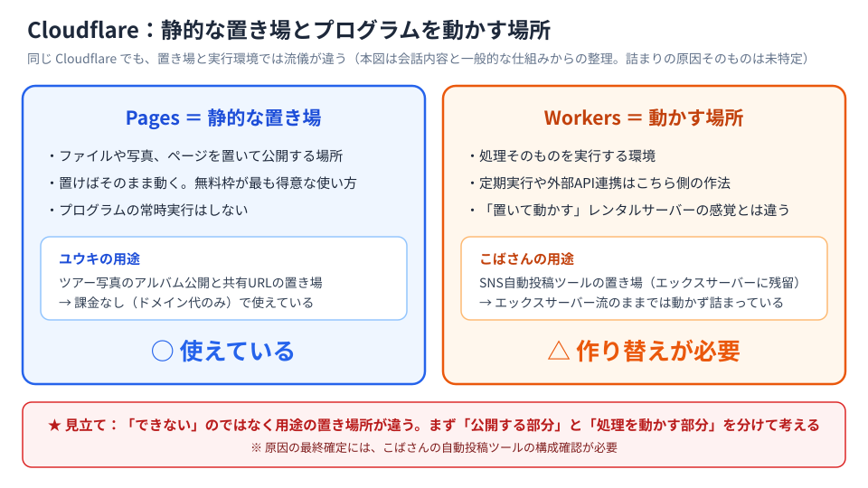
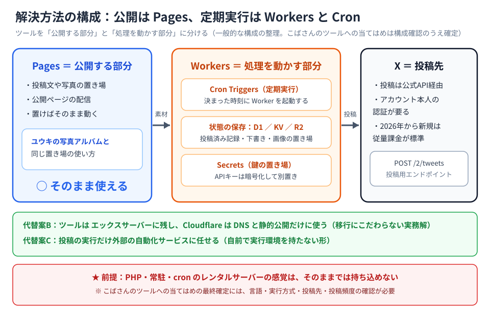

📌 要約
秋田で空き家を無償譲受したこばさんの民泊計画に、ツアーと民泊の実務者であるユウキが運営の勘所を助言し、宿坊事業者アッキーの「おテラステイ」事例が重なった夜の記録。後半の主役はAI活用で、こばさんの「Muse に聞いても連携できないと返ってきた」という詰まりに対し、ユウキの「Muse を窓口に、裏で Claude を動かす」運用と、Cloudflare の「置き場と実行環境の流儀の違い」という見立てが提示された。結論：民泊は体験ツアーとセットで副業から始めるのがよく、AIの連携は本人に聞かず橋渡し役に試行させるのが早い。
話者レジェンド
| 色 | 話者 | 立場 | この会話での役割 |
|---|---|---|---|
| ● | ユウキ | Anime Sensei 主宰。ツアーガイド・民泊運営・AI活用の実務者 | 助言役。民泊運営の勘所とAI運用の実例を出す |
| ● | アッキー | 宿坊「おテラステイ」事業者 | 事例提供役。寺に泊まる体験ビジネスの実態を語る |
| ● | こばさん | 秋田在住。現場の職人兼マネージャー（個人事業主） | 相談役。秋田民泊計画とAI・Cloudflare の詰まりを持ち込む |
本文の ユウキ アッキー こばさん の色チップが発言者を示す。★ は流し読み用の重要マーカー。
話題ごとの要点
1. 秋田民泊計画こばさん
- こばさん秋田市内で、築40〜50年の中古2階建て（6DK）を ★無償で譲り受けた。6LDKに改装し、春ごろの開業を予定。
- こばさんテーマは「昭和とビール」。水回りだけ清潔に整え、部屋は現状維持でいく方針。
- こばさん物件は自宅から車で15分ほど。半分住む「住居型」で運営する想定。
- こばさん★宿泊そのものは集客目的で、本命は体験ツアーを売ること（バックエンド商品）。
- 花火を屋上のます席で地元の人と見て、自家製の枝豆を出す数万円のプラン。
- DIY・解体の体験（本業が現場の職人兼マネージャーで、個人事業主として現場仕事もしている）。
- こばさん周辺の競合は少なく、秋田市内にもう1軒ある程度。インバウンドはまだほとんど来ていない。大学病院が近い。秋田全体では空き家バンクに約4,000件の登録があるという話も出た。

2. 運営助言ユウキ
- ユウキ★旅館業の許可がない民泊新法では年間180日まで。二段ベッドで1人1泊4〜5千円のゲストハウス型だと、1人1泊カウントですぐ180日が埋まる。6部屋あるなら個室貸しか1棟貸しが向いている。
- ユウキ地域によっては「10分程度で駆けつけられる距離に管理者がいること」が要件になる。秋田の条件は要確認。物件まで15分は際どい。
- ユウキまずは競合調査。近くの物件に実際に泊まって、価格と中身を見る。「来ないから空白なのか、需要があるのに空白なのか」の見極めが大事。
- ユウキ★価格は最初は安くして、友人・家族に泊まってもらいレビューを稼ぐ。忙しくなってから上げる。
- ユウキ初期費用ほぼゼロ・固定費ほぼなしが最大の強み。都内で家賃40〜50万円を払って始めるのとは別物で、「今は地方民泊が熱い」。
- ユウキ清掃員を雇うなら、物件は同じエリアに固める（ドミナント戦略）。近所で雇用も生まれる。
- ユウキ海外ゲストが日本の家に求めるのは、畳や和室のような「古き良き」もの。無理に新しくしない方がいい。「昭和」テーマはむしろ強み。
- ユウキ東京に何度も来たリピーターほど地方に目を向ける。秋田は「4回目・5回目の日本」で来る場所としてゼロではない。
- ユウキ★民泊もガイドも一本だと苦しい。まず副業として始め、伸びてきたらウェイトを移すのがいい（こばさんは会社員を続けながら始める想定。本業を辞めるのは先の話）。
参考リンク：住宅宿泊事業法（民泊新法）とは？｜民泊制度ポータルサイト「minpaku」（国土交通省） ― 届出制と年間180日の上限の一次情報。
3. 体験ツアーと資格ユウキこばさん
- ユウキ★体験は初期費用がかからない。民泊の開業を待たず、体験だけ先にAirbnb・TripAdvisor（Viator）・自社サイトに出しておくのが手（ユウキ自身も全部に出している）。
- ユウキ★通訳案内士の国家資格は2018年の法改正で不要になった。公共交通機関を使うツアーなら、資格なしで有償ガイドができる。
- ユウキただし自分の車にゲストを乗せると旅行業などの資格が絡み、正直グレー。タクシーに一緒に乗る形なら問題ない。
- こばさん花火職人とのコネクションが作れれば、「花火を作る人の話を聞く」体験は強い差別化になる（現時点ではコネクションなし）。
参考リンク：通訳ガイド制度｜観光庁 ― 2018年1月4日の改正通訳案内士法施行で、資格なしでも有償の通訳案内が可能になった一次情報。
4. おテラステイ（宿坊体験）アッキー
- アッキーお寺に泊まる体験を海外向けに売るサービス。相場は ★1泊5万〜10万円で、完売することもある。
- アッキー自社拠点はお寺に家賃を払う方式、サポート拠点は ★手数料20〜30%。儲けはお寺の修繕費に充てる形にしている。
- 3人宿坊の予約基盤（Bókun）については「あれしかない」という評価と、「登録しづらい」という不満の両方が出た。ユウキは「Bókunいらない、自分で作る」派。
- ユウキユウキ側には宿坊に興味のある海外ゲストと、「やりたいがやり方が分からない」住職の心当たりがあり、つなぐ話になった（TODO参照）。
5. AI時代の仕事と子育て（雑談）3人
- ユウキAIで置き換わる仕事の話。経理担当のような定型業務はAIに置き換わり、「リアルなスキルがない人はAIに変わる」。アメリカでは大工・配管工などブルーカラーがむしろ尊敬されている、というユウキの見立て。
- 3人子どもに何を教えるか。選択肢が多すぎて夢を聞いても返ってこない、翻訳ツールがあってもリアルタイムで話せる言語力には価値がある、職人技は残る、などの話。
- ユウキ録音デバイスの話。ユウキはAnkerの録音デバイス（修理中）を使い、ツアー中の会話を録って、ゲストの希望の収集と自分の英語の添削に使っている。ガイド研修にも使える仕組みで、友人のツアー会社向けに作って使わせてもいる。
6. アニメ・マンガ雑談3人
- 『魔法使いの夜』（映画）：演出と音楽のクオリティは高い、ジェットコースターのシーンの疾走感、青子が可愛いかどうかが大事、という感想戦。
- 『キングダム』：こばさん30巻前後まで読了中（麃公の死のあたり）。安く読むためにGEOレンタル（秋田は50円から）や漫画喫茶を使う。王騎は煉獄さんポジション。
- 『BLEACH』：アランカル編の途中まで。藍染の裏切りのあたり。
- 『薬屋のひとりごと』はAmazonプライムで視聴。
- ユウキ近況として、NHKの取材を受けたこと、Business Insider Japanに記事が出たこと（9月30日）、Airbnb社長と会った合宿の話も出た。
特別節1：Muse で Claude を動かす方法ユウキこばさん
こばさんの実体験：「Muse を初めて使って『Claude と連携できるの？』と聞いたら、★『連携できないんですよ』と返ってきた」。これが今回の出発点。ユウキの実際の運用は次のとおり。

全体の構成ユウキ
- 受付は Muse。ユウキが日常的に話しかけるのは Muse で、Muse 自体に仕事を頼むこともできるし、内容に応じて裏側の Claude や ChatGPT に指示を振り分けるのも Muse の役割。
- 雑に投げても「分かりました、じゃあ Claude にそれでお願いしますね」と受けてくれる融通の効き方が、Muse を窓口にする理由。
- 料金：★Claude は月200ドルのプランを使っている。Muse 側は課金していない。
連携のさせ方（ここが肝心）ユウキ
- ユウキ自身、最初から仕組みを理解していたわけではない。★「Claude コード（Muse）を使う方法を全部試しといて」と Muse 側に指示して、やり方を試行させた。
- 本人の関与は「やりたいんだけど、やっといて」まで。裏側の接続は Muse がうまいことやる体制で、今も理屈を完全に理解しないまま運用が回っている。
- つまり「連携できない」という Muse の回答は、チャット画面の中で完結させようとした場合の話。実際には Muse（パソコン上で動く Claude）が橋渡しになる。
Claude が実際にやっていることユウキ
- 自分の代わりにパソコンを操作する。Airbnb にログインさせて、予約が入ったら案内メッセージや事前アンケート送付まで任せている。
- 接続方法は相手による。API があるものは API 連携（例：Instagram 投稿は Meta の API）、ないものはログイン操作で「無理やり」繋ぐ（Viator など複数サービス）。
- 作ったものの例：
- 顧客管理ツール（ゲストの来日日程・経路・ルート・連絡先、ツアー後の写真ページURL、レビューと返信状況まで一元管理）
- ツアー写真の自動処理（後述の Cloudflare 節と連動）
- レビューへの返信案の作成
- 全巻無料キャンペーン中の漫画を AI が巡回してまとめるサイト（タダヨミ）
- 写真の位置情報とカレンダーから、行った店・見た映画を自動でリスト化する「外部脳」
- この会話自体も録音 → 文字起こし → 議事録化が同じ仕組みで回っている
運用スタイルユウキ
- 作り方は完全にバイブコーディング。「これやりたいんだけど」で始めて、★承認が必要な所だけ自分が押す。「できる限り俺の手を煩わせないで」が体制の原則で、逐一の指示はせず丸投げする。
- ページの公開先の使い分け：まず Muse のアーティファクトで作る。相手がアーティファクトを見られない環境なら GitHub Pages で公開する。
- AI社員の仕組み：部署別に AI の社員を作り、それぞれに名前・プロフィール・キャラクター画像を持たせる（受付の秘書、SEO担当など）。名前を付けると「○○さんにやっといて」と頼む形になり、愛着が湧いて続けやすい。
- コンサル事例：韓流ファンの60代の生徒には、AI を「推しのアイドル」設定にした。毎朝の面倒な作業が「推しに言われるならやる」に変わった。
- ユウキの実感：「エンジニアじゃない自分が作れるようになったのはバイブコーディングのおかげ」「今必要なのは面倒くさがりな性格。『これ面倒くさい』と思う人ほど自動化の種を見つけられる」。
こばさん側の次の一手（会話から）こばさん
- こばさんは DIY・解体動画を100時間近く撮りためていて、音声入力で内容を渡すと投稿までやる自動投稿ツールを開発中。音楽の権利（Instagram 用の音楽が Threads・Facebook で使えない、商用利用可の素材は明示義務がある等）が検討事項。
- やり取りの継続のため、LINE グループを作ることになった（TODO参照）。
参考リンク：Claude Code 公式ドキュメント（Overview） ― パソコン上で動く Claude（Claude Code）の公式説明。ターミナル・IDE・デスクトップ・Web の各形態と、できることの全体像。
特別節2：Cloudflare について（なぜユウキはできて、こばさんはできないのか）

ユウキの使い方事実
- ユウキツアー写真の保管・公開に Cloudflare を使っている。ツアーで撮った写真をアップロードするとアルバム（写真ページ）になり、ゲストへの共有URLと、Instagram 投稿フローの置き場になる。
- ユウキ投稿フロー：写真をアップ → AI が「笑顔が素敵・中央に寄っている」等の基準で良い写真を選ぶ → キャプションも AI が書く → 気に入らない写真だけ差し替えて OK を押す → Meta API 経由で Instagram に投稿される。
- ユウキ★Cloudflare への課金はしていない。払っているのはドメイン代だけ。
- ユウキユウキ本人は Cloudflare をほとんど触らない。「言われたとおりにここを押した」という初期設定だけで、あとは AI が勝手にやっている状態。
こばさんの詰まり事実
- こばさんSNS 自動投稿ツールの置き場として、★Cloudflare だけが使えず、Xサーバーに残っている。他のものは全部移行済み。
- こばさんCloudflare への課金はしていない（ドメイン代のみ、という点はユウキと同じ）。
差分についての分析見立て
★ ここは議事録作成側の見立て。会話の中で原因そのものは特定されていない。ただし用途の違いが有力な差分として挙げられる。
- ユウキの用途は「静的な置き場」：写真ファイルと Web ページを置いて公開する。これは Cloudflare の無料枠（Pages 等）が最も得意な使い方で、置くだけで動く。
- こばさんの用途は「プログラムを常時動かす場所」：自動投稿ツールという、処理を実行する仕組みの置き場。Xサーバーのような「スクリプトを置いて動かす」感覚のままでは Cloudflare では動かず、Workers のような Cloudflare 流の実行環境に作り替える必要がある。
- つまり「できない」のではなく「置き場と実行環境で、Cloudflare の流儀が違う」可能性が高い。切り分けの第一歩は、こばさんの自動投稿ツールのうち「ページやファイルの公開」部分と「定期的に処理を動かす」部分を分けて考えること。
解決方法【調べ直し】
★ 結論：詰まりの正体は「置き場所の違い」。解決は、ツールを「公開する部分」と「処理を動かす部分」に分け、公開は Pages、定期実行は Workers と Cron Triggers に置くこと。レンタルサーバーの作法（PHP のスクリプトを置いて cron で回す）は、そのままでは Cloudflare に持ち込めない。
レンタルサーバーの作法が動かない理由事実
- Workers の実行環境で公式に案内される言語は JavaScript／TypeScript／Python／Rust が中心で、PHP は対応言語に入っていない。PHP 製のツールはそのままでは動かない。
- サーバーに常駐するプログラムも、cron デーモンもない。定期実行は Workers の Cron Triggers で「決まった時刻に Worker を起動する」形に作り替えるのが公式の作法（実行時刻は UTC 指定）。
- ローカルファイルへの保存は永続しない。投稿済みの記録や下書きといった状態は、D1（SQLデータベース）／KV（キーバリュー）／R2（ファイル置き場）の専用ストレージに置く。
- APIキーなどの秘密情報は、コードや設定ファイルへの直書きではなく、Secrets（暗号化されたバインディング）に置くのが公式の作法。

案A：Workers と Cron Triggers への作り替え【本命】
- 投稿する処理だけを Worker として書き直す。元のツールが PHP なら、JavaScript 等への移植になる。
- Cron Triggers に投稿時刻を設定し、時刻が来たら投稿処理が起動する形にする。
- 下書きと投稿済み記録は D1 か KV に置き、画像ファイルは R2 に置く。
- X の APIキーは Secrets に登録し、Worker から参照する。
- 公開ページが要る部分は Pages に分ける。ユウキの写真アルバムと同じ置き場の使い方になる。
X への自動投稿に要るもの【事実と公開情報】
- 投稿にはアプリだけの認証では足りず、★投稿するアカウント本人の認証（ユーザー文脈）が要る。OAuth 2.0 の tweet.write スコープか、OAuth 1.0a のユーザートークンで、投稿用エンドポイント POST /2/tweets を呼ぶ形になる。
- 料金体系は変わっている。公開情報では、2026年2月から新規の開発者は従量課金が標準になり、投稿1件 0.015ドル、URL を含む投稿は 0.20ドル（2026年10月時点の公開情報。金額の最終確認は X の Developer Console で）。
- 投稿先が Instagram や Threads なら Meta の公式API経由が前提で、認証も利用条件も投稿先ごとに違う。ユウキの Instagram 投稿フローがその形。
案B：既存ツールをレンタルサーバーに残す併用
- 動いている自動投稿ツールは Xサーバーのまま触らず、Cloudflare は DNS と静的公開（Pages）だけに使う。「全部を Cloudflare へ移す」にこだわらなければ、詰まりは実質解消する。移行済みの他のものはそのままでよい。
案C：外部の自動化サービスで代替
- 投稿の実行部分だけを、SNS の予約投稿サービスや自動化プラットフォームに任せる手もある。自前で実行環境を持たない分、月額費用とサービス側の仕様変更に引きずられる点は引き受ける形になる。
確定に必要な確認事項
★ ここまでは一般論としての解決方法。こばさんのツールへの当てはめの最終確定には、ツールの構成確認が要る。①何の言語で書かれているか ②実行方式（cron か常駐か） ③投稿先（X／Instagram／Threads／Facebook のどれか） ④投稿頻度と画像の有無。この4点が分かれば、案Aの作り替えの量と、案Bで足りるかが決まる。
参考リンク：Cron Triggers｜Cloudflare Workers ドキュメント（定期実行の正式な作法と UTC 実行の注意）、Secrets｜Cloudflare Workers ドキュメント（APIキーの置き場）、Choosing a data or storage product｜Cloudflare Workers ドキュメント（D1／KV／R2 の使い分け）。
会話での約束
- ユウキ「今この会話を録音している。その内容をもとに、なぜ俺はできて、こばさんはできないのかを調べて、議事録にして後で出す」。本議事録の本節がその共有にあたる。原因の最終確定には、こばさんの自動投稿ツールの構成（何をどこで動かそうとしているか）の確認が次に必要。
参考リンク：Serving Pages｜Cloudflare Pages ドキュメント（静的ファイルの配信の仕組み）、Pages の上限｜Cloudflare Pages ドキュメント（無料プランの上限）、Get started｜Cloudflare Workers ドキュメント（プログラムを実行する側の入門）。
決まったこと・TODO
- 決まったこと：特になし（相談と情報共有が中心）。
- TODO：
- アッキー3人の LINE グループを作成する（AI 関連の資料・設定のやり取り用）。
- ユウキ素人AIラジオのリンクをこばさんに送る。秋田に行く際はこばさんの民泊に泊まり、ラジオのゲストにも出る話になった。
- ユウキ宿坊に興味のある住職をアッキー（おテラステイ）につなぐ。
- ユウキCloudflare が使えない原因の調べ結果を議事録で共有する（→ 本議事録の特別節2）。
面白かった論点
- ★「民泊は家がないとできないが、体験は初期費用ゼロで今日から出せる」。開業準備と並行して体験だけ先に売る、という順番の逆転。
- ★「Claude に連携を聞いても『できない』と返る」。AI 本人に聞くのではなく、Muse という別の AI に「全部試しといて」と頼むことで突破した、という二段構え。
- 「理屈は理解していない。言われたとおり押した結果がこれ」。理解してから使うのではなく、動かしながら分かる、というバイブコーディングの実態。
- AI に名前と顔を付けると「社員」になる。推しアイドル設定で60代の生徒の毎朝の作業が続いた話は、AI 導入の本質が技術ではなく動機づけだと示している。
- 地方民泊の強さは「失敗しても痛くない」こと。初期費用ほぼゼロ・固定費ほぼなしは、都内型にはない構造的な有利さ。
出典：文字起こし全文: m2 ~/VoiceMemoInbox/完成/2026-11-22_0755_秋田民泊とAI活用談義/01-文字起こし.md（話者名の反映済み）